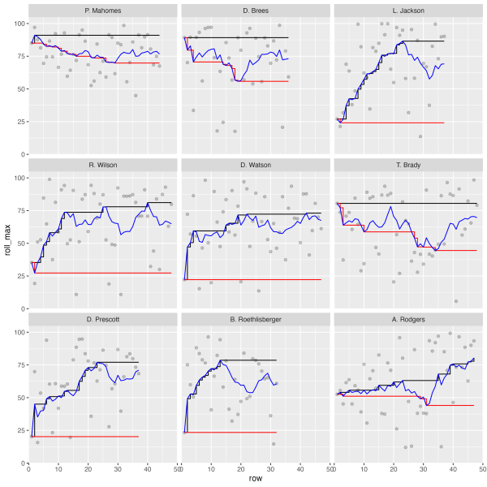
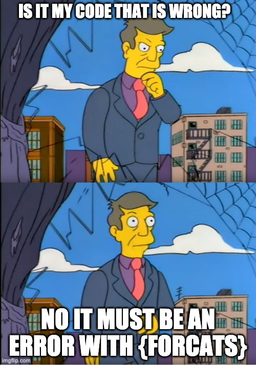
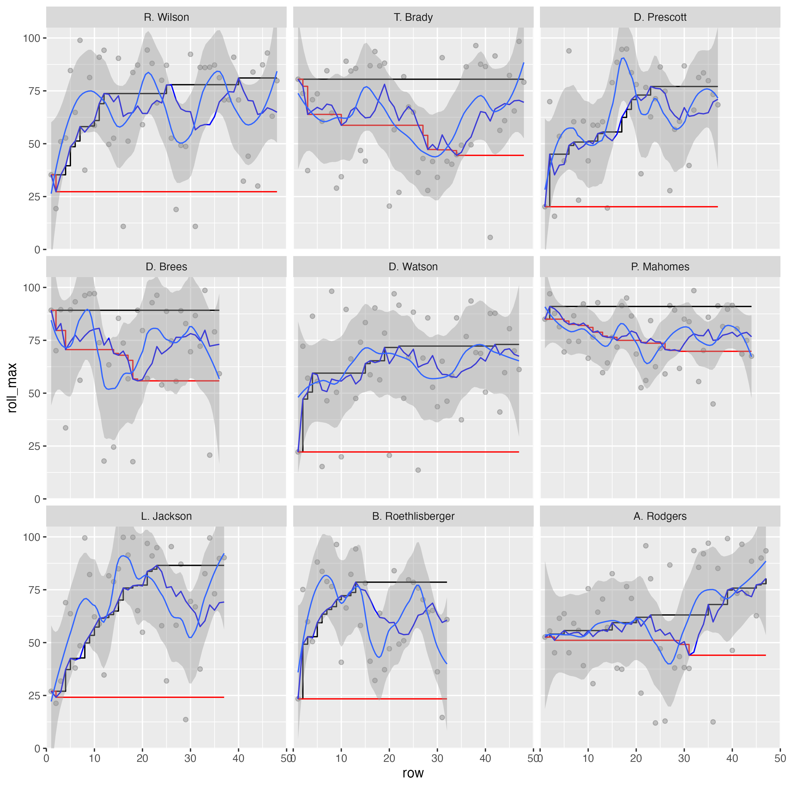
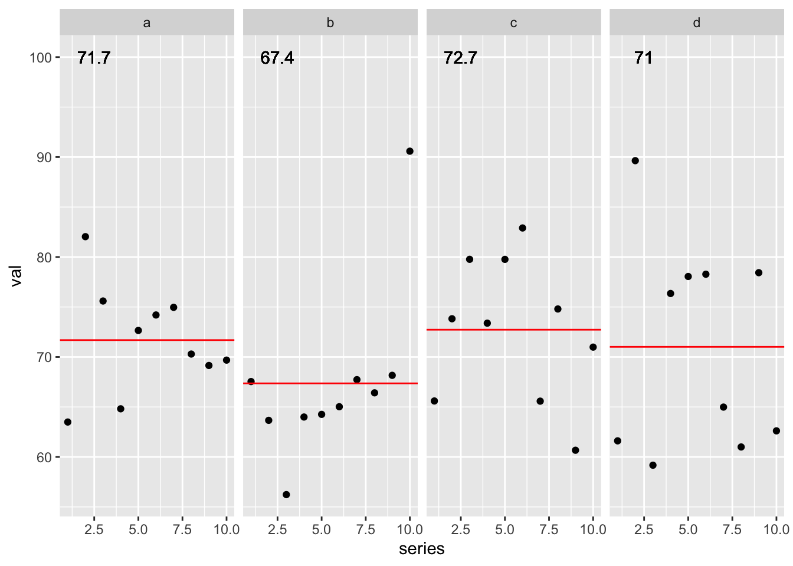
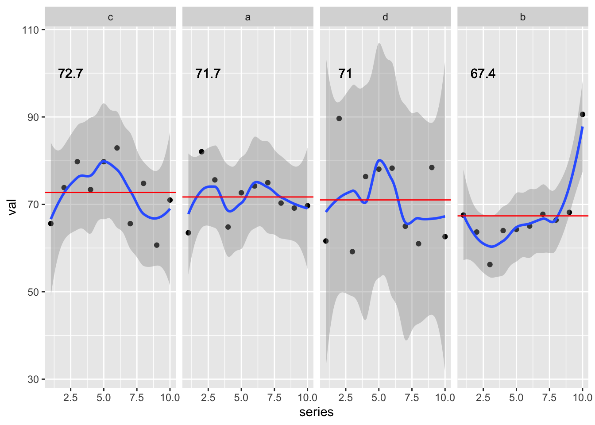
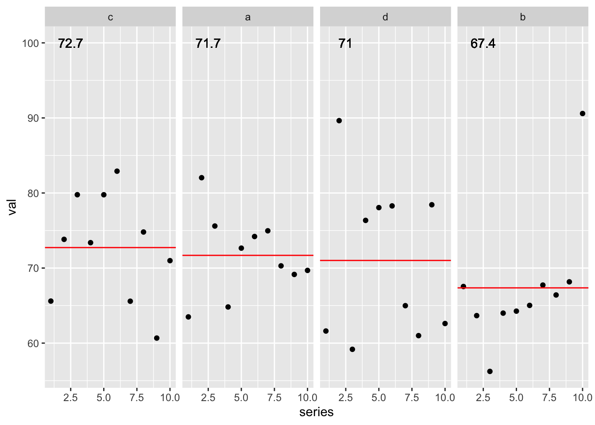

library(slider)
library(tidyverse)
library(espnscrapeR)
all_qbr <- crossing(season = 2018:2020, week = 1:17) %>%
pmap_dfr(get_nfl_qbr)
all_college_qbr <- 2018:2020 %>%
map_dfr(~get_college_qbr(.x, type = "weekly"))
test_data <- all_qbr %>%
select(player_id, qbr = qbr_total, team_abb, short_name) %>%
mutate(pure_avg = mean(qbr)) %>%
group_by(player_id) %>%
filter(n() >= 30) %>%
mutate(
short_name = fct_reorder(short_name, qbr, .fun= mean, .desc = TRUE),
grp_avg = mean(qbr, na.rm = TRUE),
diff_avg = qbr - pure_avg,
roll_mean = slide_dbl(qbr, mean, .before = 8L),
roll_max = slide_dbl(roll_mean, max, .before = Inf),
roll_min = slide_dbl(roll_mean, min, .before = Inf),
row = row_number()
) %>%
ungroup()
test_plot <- test_data %>%
filter(grp_avg >= 62) %>%
ggplot(aes(x = row, y = roll_max)) +
geom_point(aes(y = qbr), alpha = 0.2) +
geom_step() +
geom_step(aes(y = roll_min), color = "red") +
geom_line(aes(y = roll_mean), color = "blue") +
geom_smooth(aes(y = qbr),method = "loess", size = 0.5, span = 0.35) +
facet_wrap(~factor(short_name)) +
coord_cartesian(ylim = c(0, 105), xlim = c(0, 50), expand = FALSE)
test_plotIt’s been a while since my last post, so I wanted to get back into the swing of things with a shorter article. My goal was to get a new one up on the blog before August 1st.
As such, I was working late on a much longer form article and as part of this I wanted to display some smoothed lines for several players on one plot. A sneak peek of some of this below:
 Now, I’ve been programming in R for quite some time, but for the life of me I couldn’t get my facets to align properly. This led to a bit of frustration as I “knew” what I was doing should be right but wasn’t returning the expected “correct” output.
This article walks through why I believe {reprex} driven testing is so useful for compartmentalizing a problem and getting at the specifics of why our expectation sometimes don’t match the output.
Like most useful ideas, I’m far from the first person to think of it!
I’ve decided that preparing a reprex is, in fact, a very effective technique for solving your own problems
— Jenny Bryan (@JennyBryan) January 4, 2018
it’s basically the rubber duck in disguise
My problem-solving workflow:
— Garrick Aden-Buie (@grrrck) June 19, 2021
1. 🤬 something’s wrong with this pkg
2. I’m gonna open a GitHub issue
3. Wait, I need to add a reprex
4. Oohhhhhh 💡
5. Problem solved ✅ https://t.co/8GVJvR71YL
Software engineering research question: if people are required to create a short reproducible example (reprex) when filing a bug, how often does doing that result in them solving their own problem?
— Greg Wilson (@gvwilson) February 22, 2021
That’s a few folks who I have a great deal of respect for, and as usual they have great advice for us! (Write a reprex and you’ll likely solve the problem as you go)
Who’s problem is this?
Now whenever I run into errors, mistakes, or unexpected outputs I ask myself:
Is this a “Tom” problem? Or is this R’s fault?

The short answer is that it’s almost always a “me” problem, as R is just diligently following the commands I gave to it. However, in some rare cases I do find a bug and can use the reprex testing I’ve done to quickly log a useful a bug report for the package developers.
If you haven’t run into the term “reprex” before, it is a:
“minimal reproducible example”
You can read more about the {reprex} package on the package documentation site.
If you’re asking for R help, reporting a bug, or requesting a new feature, you’re more likely to succeed if you include a good reprex.
That quote is from the reprex docs, and I’ll add to it that a reprex can help with you solving your own problems BEFORE even submitting the bug request!
The Goal
While writing the article, I wanted to create a scatter plot, and facet the players by their respective QBR (Quarterback ratings) average scores. However, I kept getting the players to facet_wrap() by somewhat of an alphabetical order instead of in descending ranked order. This was a hint that my factor ordering via forcats was not being respected. I have included the “wrong” plot below.

This was of course frustrating, so I started doing some testing/troubleshooting of the complex plot as it was.
Initiate testing
Let’s reproduce the initial problem. We’ll load the necessary packages, bring in the data, and generate the respective dataframes/plots as well. I’m intentionally leaving the code without comments and as a single code chunk as this is supposed to be a bit like a random code review. In retrospect the error is quite clear to me, but I was honestly stumped for a good chunk of time.
Maybe it’s a factor thing?
My initial thought is “it seems the factors are not being represented correctly”. Since I’m using forcats::fct_reorder(.f = short_name, .x = qbr, .fun = mean, .desc = TRUE) the Quarterback names should respect the “ranking” by their respective descending average QBR.
However, what I was getting out in ggplot2 is ordered as below. It’s not in any real order!
# A tibble: 9 × 2
short_name grp_avg
<fct> <dbl>
1 R. Wilson 66.4
2 T. Brady 63.0
3 D. Prescott 62.9
4 D. Brees 71.4
5 D. Watson 63.4
6 P. Mahomes 77.2
7 L. Jackson 68.4
8 B. Roethlisberger 62.6
9 A. Rodgers 62.1What I wanted, and how it “should” arrange like below:
test_data %>%
filter(grp_avg >= 62) %>%
mutate(short_name = fct_reorder(short_name, qbr, .fun = mean, .desc = TRUE)) %>%
distinct(short_name, grp_avg) %>%
arrange(short_name)# A tibble: 9 × 2
short_name grp_avg
<fct> <dbl>
1 P. Mahomes 77.2
2 D. Brees 71.4
3 L. Jackson 68.4
4 R. Wilson 66.4
5 D. Watson 63.4
6 T. Brady 63.0
7 D. Prescott 62.9
8 B. Roethlisberger 62.6
9 A. Rodgers 62.1So let’s take a look at the test_data object. The factors are simply “wrong”! We know we’re looking for “P. Mahomes” to always lead our rankings in this dataset. The results below are not in any “real” order!
test_data %>%
filter(grp_avg >= 62) %>%
distinct(short_name) %>%
arrange(short_name) %>%
pull() %>%
levels() [1] "M. Ryan" "M. Stafford" "C. Newton"
[4] "A. Dalton" "R. Tannehill" "K. Cousins"
[7] "R. Wilson" "D. Carr" "T. Brady"
[10] "C. Wentz" "D. Prescott" "D. Brees"
[13] "M. Trubisky" "J. Goff" "B. Mayfield"
[16] "D. Watson" "P. Mahomes" "S. Darnold"
[19] "L. Jackson" "K. Murray" "J. Allen"
[22] "P. Rivers" "B. Roethlisberger" "A. Rodgers" I thought to try to correct it manually. I could just get a vector of the quarterbacks according to the ranking and then apply it with factor(short_names, levels = qb_lvls). This gets us the “right” order of the names BUT it doesn’t really solve our underlying problem or tell us why it’s not working out as expected. This is a “bandaid” instead of a “cure” to my problem! If I did that I would never know if I had a wrong mental model, if there was an actual bug in ggplot2 or forcats (unlikely), or if I was simply coding it all wrong.
qb_lvls <- test_data %>%
group_by(short_name) %>%
distinct(grp_avg) %>%
arrange(desc(grp_avg)) %>%
pull(short_name) %>%
as.character()
qb_lvls [1] "P. Mahomes" "D. Brees" "L. Jackson"
[4] "R. Wilson" "D. Watson" "T. Brady"
[7] "D. Prescott" "B. Roethlisberger" "A. Rodgers"
[10] "M. Ryan" "M. Stafford" "J. Allen"
[13] "P. Rivers" "K. Murray" "R. Tannehill"
[16] "K. Cousins" "B. Mayfield" "D. Carr"
[19] "J. Goff" "C. Wentz" "M. Trubisky"
[22] "A. Dalton" "C. Newton" "S. Darnold" Make a reprex
So far, I dove into a few troubleshooting steps but it didn’t clarify what my underlying problem was. What I should have done was create a reprex or break the problem down into smaller pieces! I was about to ask for some help, so I wanted to generate a reprex to use as the “ask”.
Now for the reprex, I don’t want to include data scraped from the internet as the data doesn’t really matter (and it requires a separate package - espnscrapeR). So let’s simulate data!
library(tidyverse)
set.seed(20210728)
sim_data <- crossing(
grp = letters[1:4],
series = 1:10
) %>%
mutate(
val = rnorm(n = nrow(cur_data()), mean = 70, sd = 8)
)
sim_data# A tibble: 40 × 3
grp series val
<chr> <int> <dbl>
1 a 1 63.5
2 a 2 82.0
3 a 3 75.6
4 a 4 64.8
5 a 5 72.7
6 a 6 74.2
7 a 7 75.0
8 a 8 70.3
9 a 9 69.2
10 a 10 69.7
# … with 30 more rowsWe also don’t need ALL the calculations we are doing, so let’s simplify it to just the minimal calculation:
- a grouped average
- an ordered factor according to that grouped average
sim_plot_df <- sim_data %>%
group_by(grp) %>%
mutate(
grp_avg = mean(val, na.rm = TRUE),
grp_fct = fct_reorder(grp, val, .fun = mean, .desc = TRUE)
) %>%
ungroup()
sim_plot_df# A tibble: 40 × 5
grp series val grp_avg grp_fct
<chr> <int> <dbl> <dbl> <fct>
1 a 1 63.5 71.7 a
2 a 2 82.0 71.7 a
3 a 3 75.6 71.7 a
4 a 4 64.8 71.7 a
5 a 5 72.7 71.7 a
6 a 6 74.2 71.7 a
7 a 7 75.0 71.7 a
8 a 8 70.3 71.7 a
9 a 9 69.2 71.7 a
10 a 10 69.7 71.7 a
# … with 30 more rowsLet’s check what the order should be - looks like c > a > d > b
# A tibble: 4 × 2
grp grp_avg
<chr> <dbl>
1 c 72.7
2 a 71.7
3 d 71.0
4 b 67.4Now, let’s confirm what are the returned levels?
Our reprex returned the “wrong” values! At this point, I thought I had legitimately found a bug…but I wanted to go one step further and check the plotting. I went ahead and added back in some complexity to check myself - specifically adding a horizontal line to indicate the group average and a label of the actual numeric group average on each facet.
STILL WRONG!
sim_plot_df %>%
ggplot(aes(x = series, y = val)) +
geom_point() +
geom_hline(aes(yintercept = grp_avg), color = "red") +
geom_text(aes(x = 2.5, y = 100, label = round(grp_avg, digits = 1))) +
facet_wrap(~grp_fct, ncol = 4) 
Last step was to confirm I could get ggplot2 to return the expected behavior of c > a > d > b. I could get the “right” behavior by adding in the fct_reorder() across the overall data inside facet_wrap().
sim_plot_df %>%
ggplot(aes(x = series, y = val)) +
geom_point() +
geom_smooth() +
geom_hline(aes(yintercept = grp_avg), color = "red") +
geom_text(aes(x = 2.5, y = 100, label = round(grp_avg, digits = 1))) +
facet_wrap(~fct_reorder(grp_fct, val, .fun = mean, .desc = TRUE), ncol = 4) `geom_smooth()` using method = 'loess' and formula 'y ~ x'
At this point the answer stared me right in the face!
I could get the “right” behavior by adding in the
fct_reorder()across the overall data insidefacet_wrap().
Emphasis there added on “overall data”. In my group_by + mutate I was applying a factor transformation WITHIN each group so each factor was basically a factor with only 1 level (the specific group), and when combined back into the dataframe it returned an overall factor with levels simply according to the order of the rows in the data.
Here’s a peek at the initial reprex.
and now after I’ve moved the fct_reorder() ahead of the group_by().
sim_plot_df_fixed <- sim_data %>%
# fct_reorder done BEFORE grouping
mutate(grp_fct = fct_reorder(grp, val, .fun = mean, .desc = TRUE)) %>%
group_by(grp) %>%
mutate(
grp_avg = mean(val, na.rm = TRUE)
) %>%
ungroup()
sim_plot_df_fixed %>%
ggplot(aes(x = series, y = val)) +
geom_point() +
geom_hline(aes(yintercept = grp_avg), color = "red") +
geom_text(aes(x = 2.5, y = 100, label = round(grp_avg, digits = 1))) +
facet_wrap(~fct_reorder(grp_fct, val, .fun = mean, .desc = TRUE), ncol = 4) 
By breaking the problem down into the simplest version of itself, and carefully checking my assumptions as I went, I was able to get at the root of the problem.
In essence by preparing the reprex in preparation of asking for help, I was able to solve the problem.
In the words of Jenny Bryan:
it’s basically the rubber duck in disguise

Rubber duck debugging according to Wikipedia
In software engineering, rubber duck debugging is a method of debugging code. The name is a reference to a story in the book The Pragmatic Programmer in which a programmer would carry around a rubber duck and debug their code by forcing themselves to explain it, line-by-line, to the duck.
So go out, create your reprex, solve some of your own problems, and submit even better bug reports!
Expand for Session Info
─ Session info ───────────────────────────────────────────────────────────────
setting value
version R version 4.2.0 (2022-04-22)
os macOS Monterey 12.2.1
system aarch64, darwin20
ui X11
language (EN)
collate en_US.UTF-8
ctype en_US.UTF-8
tz America/Chicago
date 2022-04-28
pandoc 2.18 @ /Applications/RStudio.app/Contents/MacOS/quarto/bin/tools/ (via rmarkdown)
quarto 0.9.294 @ /usr/local/bin/quarto
─ Packages ───────────────────────────────────────────────────────────────────
package * version date (UTC) lib source
dplyr * 1.0.8 2022-02-08 [1] CRAN (R 4.2.0)
espnscrapeR * 0.6.5 2022-04-26 [1] Github (jthomasmock/espnscrapeR@084ce80)
forcats * 0.5.1 2021-01-27 [1] CRAN (R 4.2.0)
ggplot2 * 3.3.5 2021-06-25 [1] CRAN (R 4.2.0)
purrr * 0.3.4 2020-04-17 [1] CRAN (R 4.2.0)
readr * 2.1.2 2022-01-30 [1] CRAN (R 4.2.0)
sessioninfo * 1.2.2 2021-12-06 [1] CRAN (R 4.2.0)
slider * 0.2.2 2021-07-01 [1] CRAN (R 4.2.0)
stringr * 1.4.0 2019-02-10 [1] CRAN (R 4.2.0)
tibble * 3.1.6 2021-11-07 [1] CRAN (R 4.2.0)
tidyr * 1.2.0 2022-02-01 [1] CRAN (R 4.2.0)
tidyverse * 1.3.1 2021-04-15 [1] CRAN (R 4.2.0)
[1] /Library/Frameworks/R.framework/Versions/4.2-arm64/Resources/library
──────────────────────────────────────────────────────────────────────────────